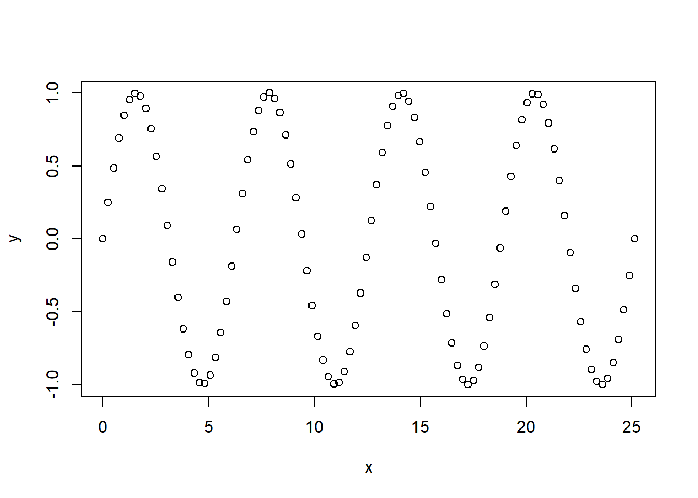
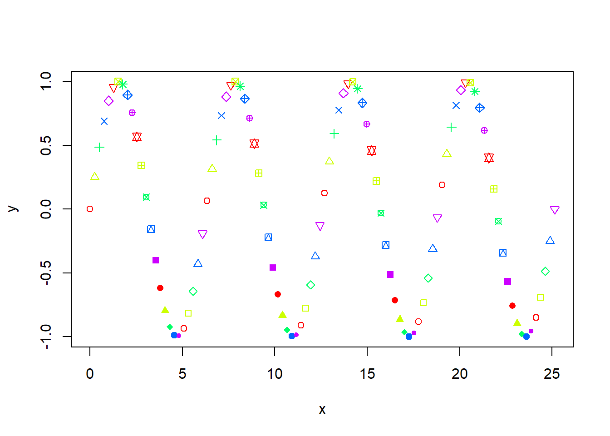

x <- seq(0,8*pi,length.out=100)
y <- sin(x)Lesson 4 Exercises
Question 1
plot() is the main graphing function in R. it automatically produces simple plots for vectors, functions or data frames.
As part of our research on functions and mathematics at university, we want to visualize functions.
- Plot the following vectors in R. try to think what the x and y axis represents.
you should get something like this:

There are many ways to change the plot we created in R and to change it to our needs!
- using the
plot()function, add the pch argument between 1 and 25, In addition use the rainbow color argument with 5 unique colors.
you should get something like this:

Another useful argument is changing the type of the plot
- using the
plot()function, add the type argument for the following criteria, write down what changed in the plot.
type = “p”
type = “l”
type = “b”
type = “c”
type = “o”
type = “s”
type = “n”
Question 2
We have already learned about histograms, however in this exercise we will learn to control their output.
Load beersheva.csv from moodle and plot a histogram of the column tempcmax.
Add the title “Max Temperature in Beersheva”.
Name x-axis “Max Temp” and make the histogram to be gold-colored.
Make the histogram to have 9 breaks
Question 3
Histograms are great, however Kernal density plots are usually a much more effective way to view the distribution of a variable.
Create a kernel density plot from the same data as before
The plot should be with the same title as before, filled with light green color and a dark green border.
which one is better - histogram of kernel density plot?